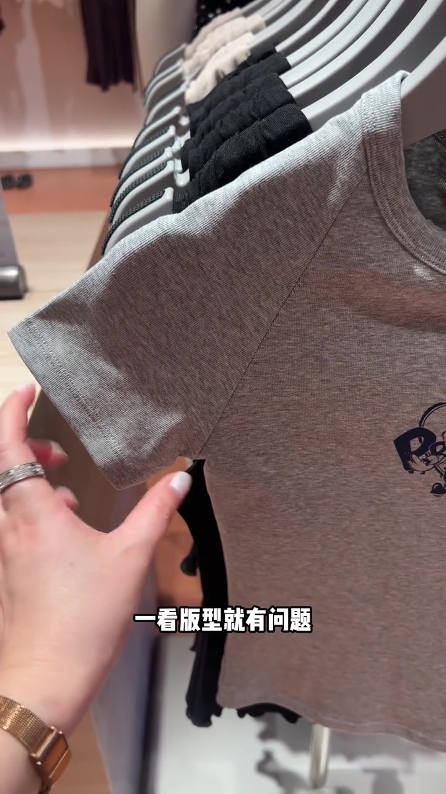
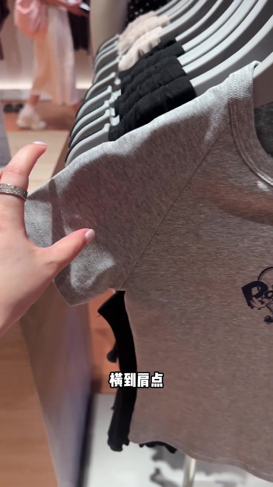
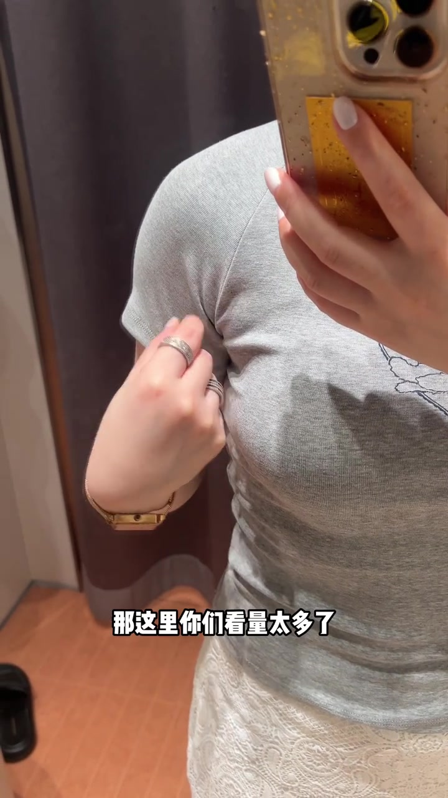
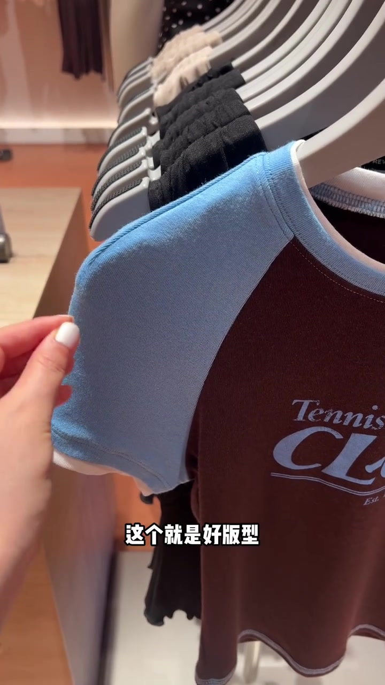
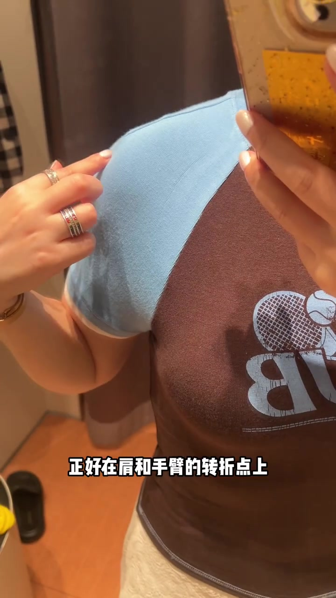
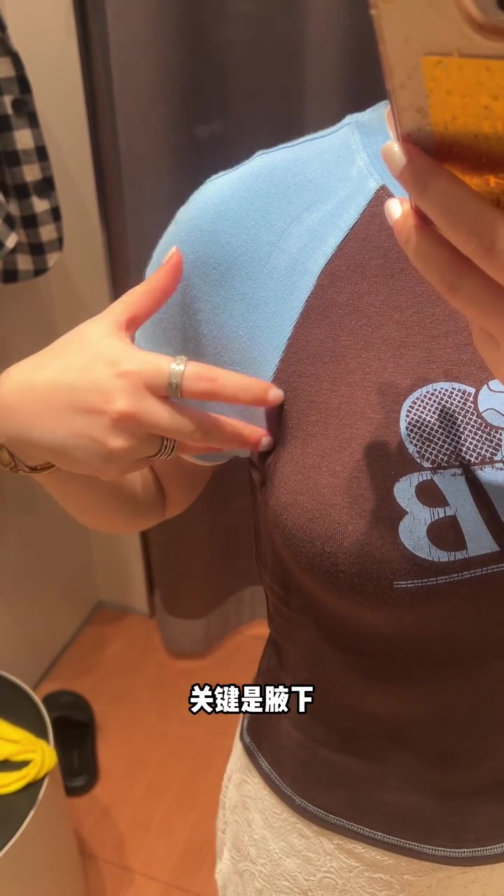
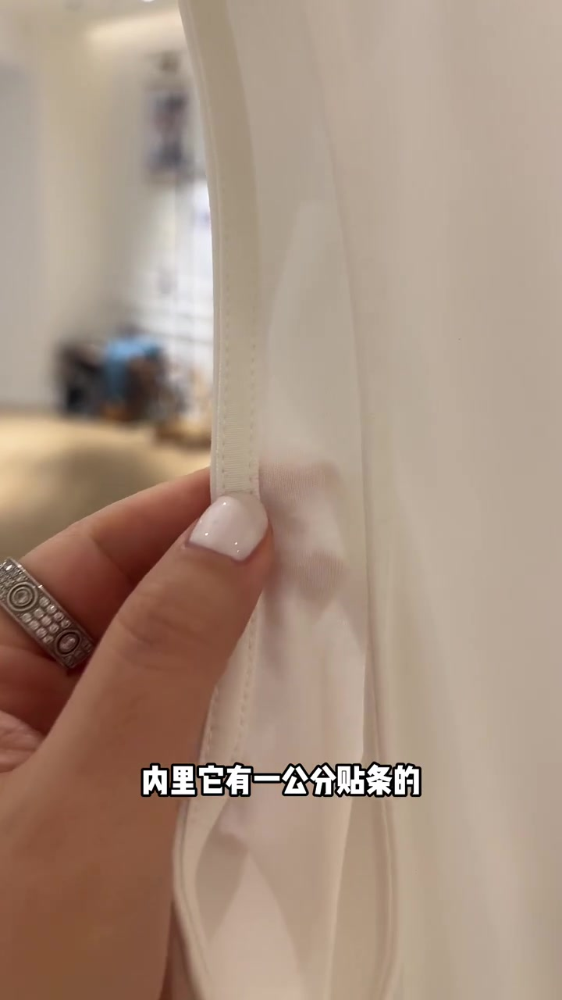
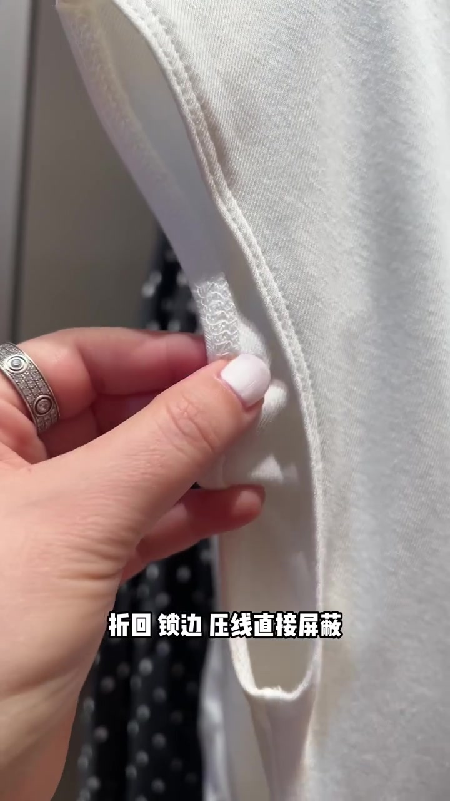

00:00–00:15
开场：同样是插肩袖，差版一眼看得出“只有一个斜向”
视频在试衣间与货架之间来回切：主讲人先用“差的／好的”对照，再把镜头推到一件灰色插肩袖短袖——字幕直接写“一看版型就有问题”。
她解释：正常肩与手臂是两个方向，横到肩点再折下来；差版却只剩斜向一条方向。上身时手臂又不可能一直斜着撑开，多数情况是自然放下，于是结构与动作对不上。
可见字幕校正：Whisper 把「插肩袖」听成「插线袖」，把「量太多了／纱向／省尖儿／转折点／腋下／贴条／碰瓷」听成音近字。下文按画面字幕与缝制常识叙述，文末转录区仍保留原始分段。

[00:04] 反例开场：灰色插肩袖，叠字“一看版型就有问题”。
Counter-example opening: a gray raglan sleeve, overlay “the cut looks wrong at a glance.”

[00:08] 动作示范：拉开袖子讲“横到肩点”，对照正常肩臂转折。
Demo: opening the sleeve to explain “reaching the shoulder point,” contrasted with a normal shoulder turn.
00:15–00:18
试穿特写：手臂放下后，腋下“量太多了”
镜头切回试衣间镜面：主讲人穿着那件灰色短袖，手指点向腋下与上臂交界。字幕明确写“那这里你们看量太多了”，口播接着补“又丑又不舒服”。
这一段把版型问题从货架上的“斜向缝”推进到上身后的可见余量——读者不需要懂制版术语，也能看见鼓起与松垮。

[00:16] 上身反例：点向腋下，叠字“量太多了”。
Upper-body counter-example: pointing toward the armpit, overlaid text “too much product.”
00:18–00:30
对照好版：肩上捏省，改纱向，省尖落在转折点
同样是插肩袖，画面换成棕身浅蓝袖的 Tennis Club 短袖。字幕打出“这个就是好版型”。主讲人捏住肩袖交界，说它只是在肩的位置上捏了个省，从而改变整体纱向。
上身以后，省尖儿的位置正好落在肩和手臂的转折点上，整体更贴合肩部与手臂。画面里她指着肩袖折线，让读者把“省的位置”和“身体转折”对齐。

[00:20] 好版对照：棕身浅蓝袖插肩短袖，叠字“这个就是好版型”。
Good-cut comparison: a brown-body, light-blue-sleeve raglan tee, overlay “this is good tailoring.”

[00:28] 省尖落点：叠字“正好在肩和手臂的转折点上”。
Dart tip placement: overlay “right at the shoulder-to-arm turning point.”
00:30–00:34
复检标准：关键是腋下，余量少才舒适美观
好版试穿后，主讲人再次点向腋下。字幕写“关键是腋下”，并补充“没有太多的量更舒适美观”。前半段的论证到这里收束：差版看斜向缝与余量，好版看省尖是否对准转折、腋下是否干净。

[00:32] 复检点：叠字“关键是腋下”，余量少才舒服好看。
Recheck point: overlay “the key is the armpit” — less ease is more comfortable and better-looking.
00:34–00:41
话题切换：无袖 T 认准内里约一公分贴条
后半段离开插肩袖，切到白色无袖 T 恤的内里特写。主讲人说大家认准这种内里——还有约一公分贴条的做法。字幕可见“内里它有一公分贴条的”。她主张这种可以洗衣机随便洗，穿到衣服破洞都不易变形。
“穿到破洞都不变形”是口播夸张强调，属于作者经验立场；可当作耐洗结构的强信号，不宜当成所有面料的绝对保证。

[00:37] 正例工艺：内里约一公分贴条，认准这种做法。
Positive craft: an inner ~1cm facing tape — recognize this approach.
00:41–00:50
反例收尾：折回锁边压线，用手撑几下就变形
镜头翻到另一种白色无袖内里：面料折回、锁边再压线。字幕写“折回 锁边 压线直接屏蔽”。主讲人演示用手撑几下，说可能都变形没法看了，最后玩笑式提醒“赶紧走，小心被碰瓷”。

[00:44] 反例工艺：折回、锁边、压线，叠字提示直接屏蔽。
Counter-example craft: folded-back, overlocked, stitched — the overlay says to block these outright.